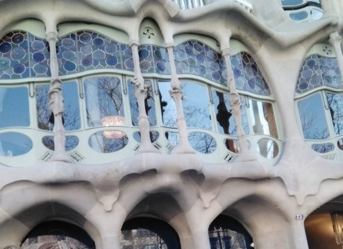
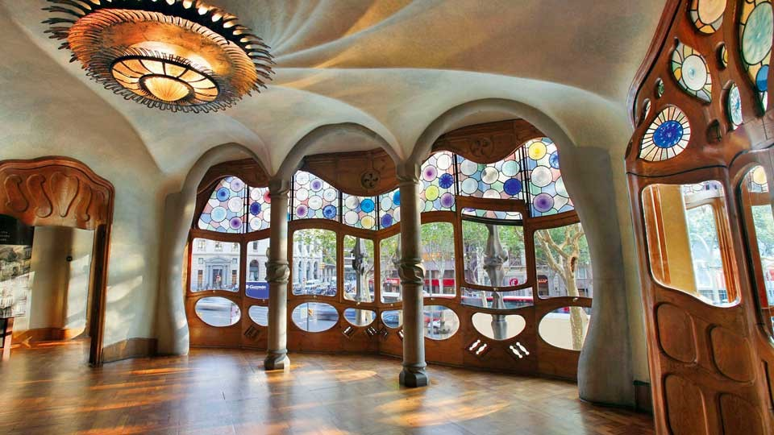
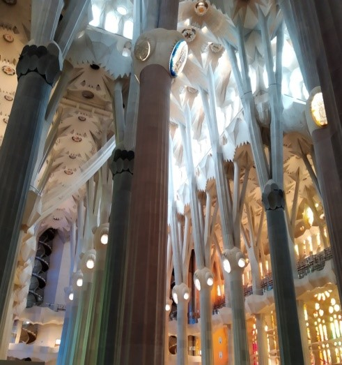
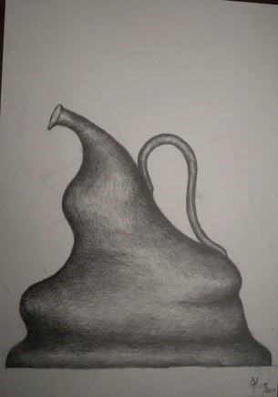
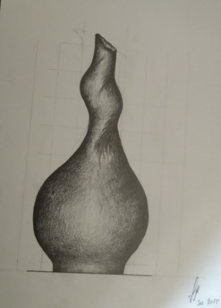
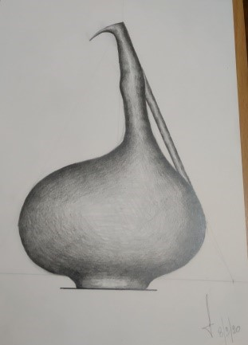
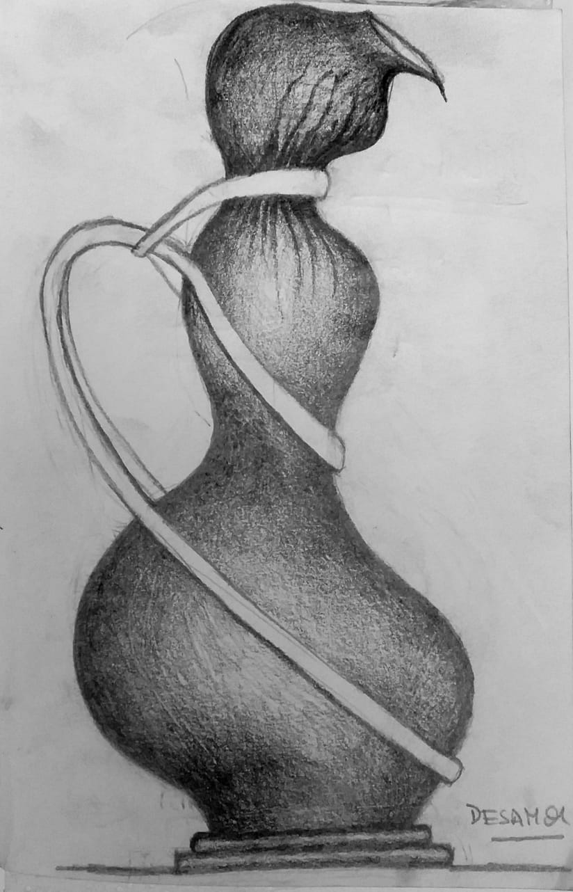
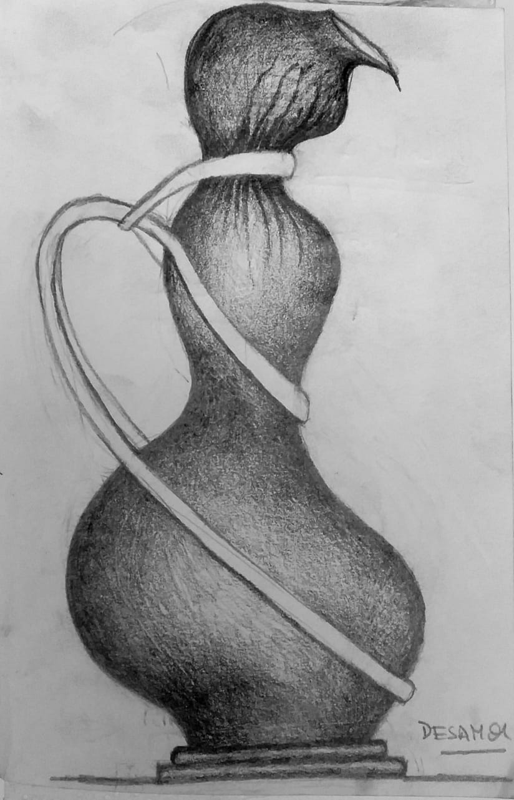

Mi Historia
Desde hace muchos años me he cuestionado muchas cosas, me cuestioné a Dios, a la vida, a la filosofía, a la muerte, a la belleza, a la justicia y todo lo que me rodeaba. Pienso que hay una razón para casi todo y tras ello algo que aprender, así que estoy todo el tiempo preguntándome. En mi primer año en Udelar (facultad de arte) en cerámica hicimos muchos trabajos, con distintas técnicas, nos mostraron un poco de los fundamentos de la cerámica. Una consigna fue crear una matriz para luego hacer el molde y por colada tener una serie. Teníamos 8 cm para diseñar una pieza. En mi cabeza tenía una cazuela, es lo que quería hacer, pero las medidas no se adaptaban, así que quedó algo parecido a una cazuela, mucho más pequeña, y recuerdo las preguntas del taller hasta de los compañeros de años más avanzados. ¿Qué es eso? ¿Para qué sirve? ¿Para una picada? ¿Para un helado? Esa idea me encantó, era un objeto utilitario pero no se sabía cómo usarlo porque no estaba dentro de lo que estamos acostumbrados a ver, lo que nos imponen, cómo debemos comer, qué cantidad y todo lo demás que eso conlleva y descubrí que eso me gustaba, que las personas se cuestionen, cómo me cuestioné yo toda la vida. Ese primer año también estuvimos trabajando en expresión libre, donde quedó al descubierto mi gusto por el surrealismo. El movimiento en objetos que no se mueven, una vez más el cuestionamiento, darle vida al objeto, sentir que habla o que no puede decir. De esta forma me gustaría citar a un artista que trabaja esas formas orgánicas de una manera majestuosa a una escala mucho mayor: la arquitectura, Antonio Gaudí.
  Antonio Gaudi es uno de los artistas con la cual me identifico, fue un antecedente muy importante, si bien es un arquitecto y su escala es mucho mayor, intento darle vida a los jarrones, comunicarme a través de ellos, son parte de mí y de lo que siento, por esa razón los siento vivos.
  

 
